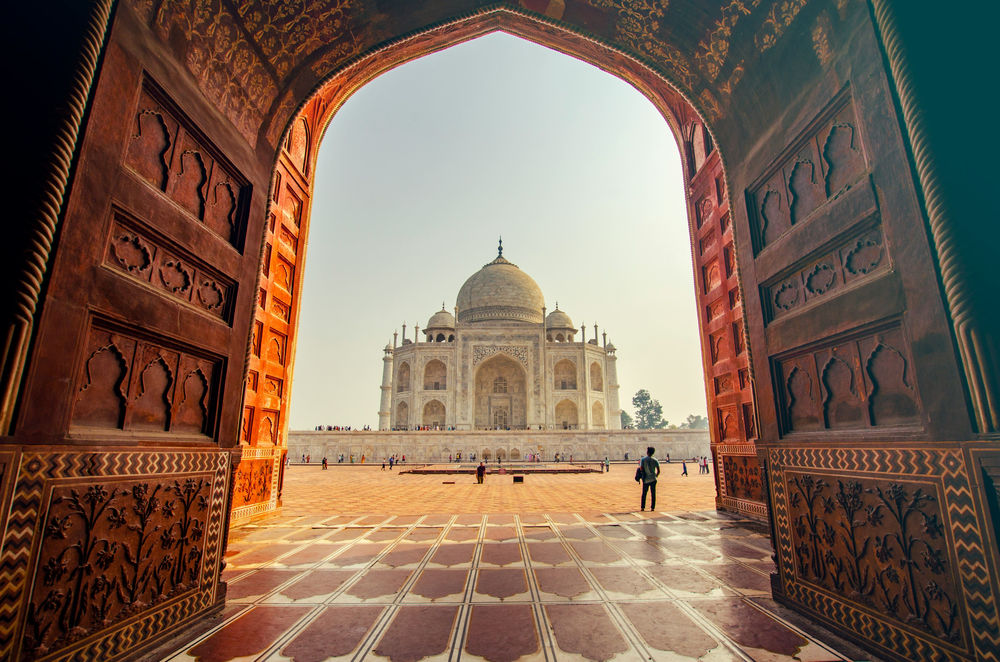
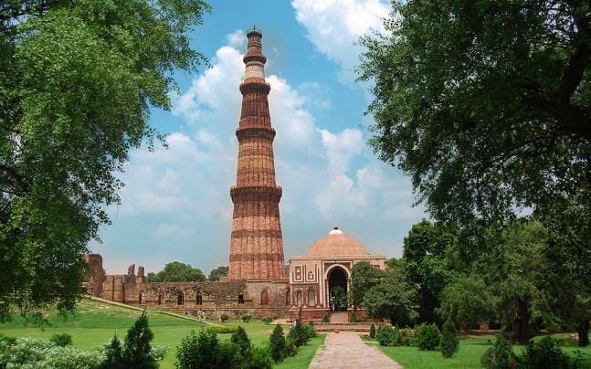
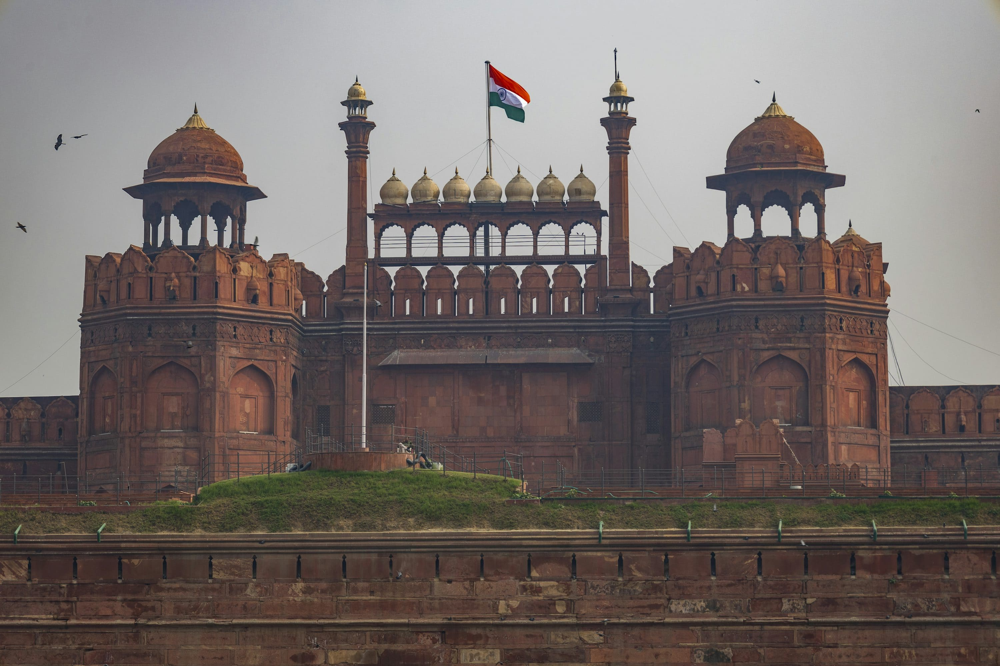
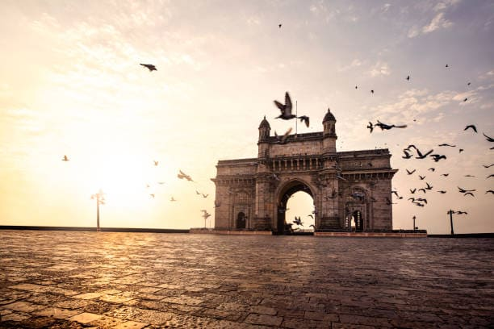
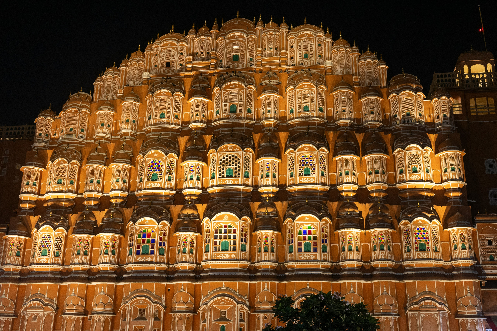
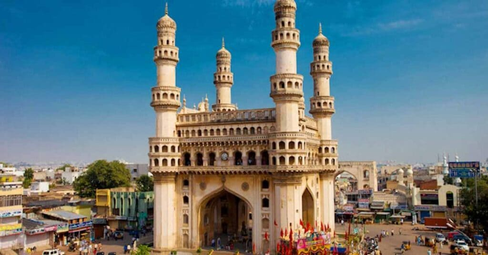
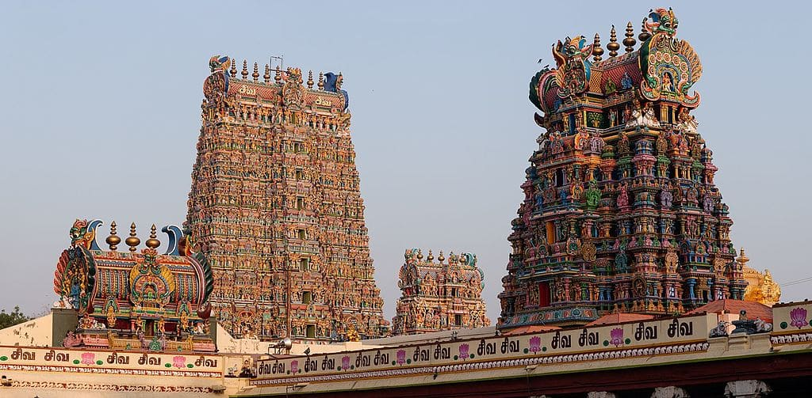
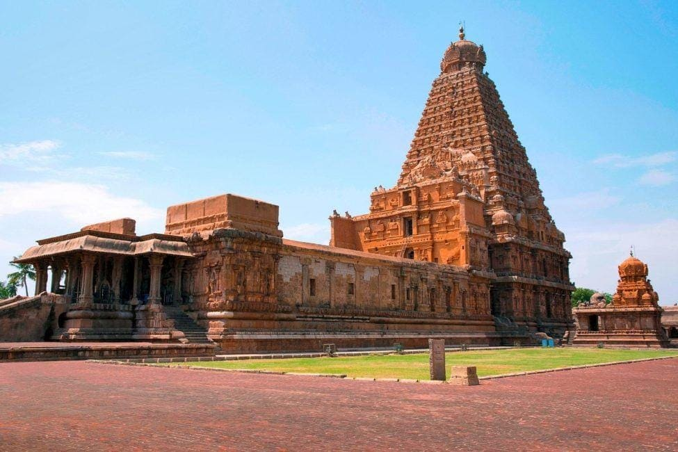
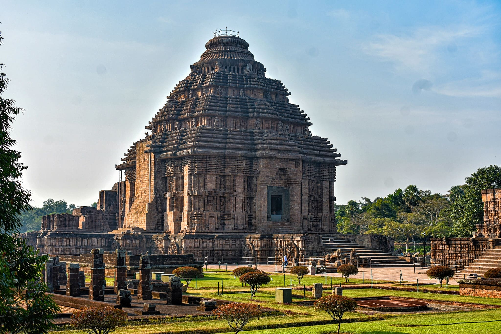

India's landmarks are a testament to its rich history, architectural
prowess, and cultural diversity, drawing millions of visitors from
around the world. The Taj Mahal in Agra, an iconic symbol of love and an
architectural marvel, stands as one of the most recognizable landmarks
globally. The historic Red Fort in Delhi, with its imposing walls and
intricate design, offers a glimpse into India's Mughal past. The
majestic forts and palaces of Rajasthan, such as the Amber Fort and the
City Palace in Jaipur, showcase the grandeur of Rajput architecture. The
ancient temples of Khajuraho, with their intricate carvings, and the
rock-cut caves of Ajanta and Ellora highlight the country's artistic
heritage. The Gateway of India in Mumbai and the India Gate in Delhi are
monumental tributes to India's colonial history and independence. Modern
landmarks like the Lotus Temple and the Akshardham Temple in Delhi
exemplify contemporary architectural brilliance and spiritual
significance. Each landmark, whether steeped in history or embodying
modernity, contributes to the rich and diverse tapestry of India's
cultural heritage.
Taj Mahal

Description: The Taj Mahal, located in Agra, Uttar
Pradesh, is one of the most iconic landmarks of India. Built by
Mughal Emperor Shah Jahan in memory of his beloved wife Mumtaz
Mahal, this white marble mausoleum is renowned for its stunning
beauty and intricate craftsmanship.
Historical Significance: Completed in 1653, it is a
UNESCO World Heritage Site and is widely recognized as a symbol of
eternal love.
Architectural Details: The Taj Mahal features a
central dome surrounded by four minarets, and is adorned with
detailed marble inlay work. Its symmetrical gardens and reflective
pools enhance its grandeur, making it a masterpiece of Mughal
architecture.
Visitor Information: Visitors from around the world
flock to see this architectural marvel, which is often considered
one of the New Seven Wonders of the World.
Qutub Minar

Description: The Qutub Minar, located in Delhi, is
a towering minaret that stands 73 meters tall. It was built in 1193
by Qutb-ud-din Aibak, the founder of the Delhi Sultanate, as a
victory tower to commemorate his conquest of Delhi.
Architectural Style: The Qutub Minar is an
excellent example of early Indo-Islamic architecture and is noted
for its intricate carvings and inscriptions in Arabic.
Structural Details: The minaret is constructed of
red sandstone and features a spiral staircase with 379 steps. It is
surrounded by the Qutub Complex, which includes several other
historic structures, such as the Quwwat-ul-Islam Mosque and the Iron
Pillar of Delhi.
UNESCO World Heritage Site: The Qutub Minar is a
UNESCO World Heritage Site and remains a prominent tourist
attraction in India.
Red Fort

Description: The Red Fort, also known as Lal Qila,
is a historic fort in Delhi that served as the main residence of the
Mughal emperors for nearly 200 years. Constructed in 1639 by Shah
Jahan, the fort is named for its massive red sandstone walls.
Architectural Highlights: The fort complex includes
numerous structures, such as the Diwan-i-Aam (Hall of Public
Audience), the Diwan-i-Khas (Hall of Private Audience), and the Rang
Mahal (Palace of Colors).
Independence Day Significance: Every year on
Independence Day, the Prime Minister of India hoists the national
flag at the Red Fort and delivers a speech to the nation.
UNESCO World Heritage Site: The Red Fort is a
UNESCO World Heritage Site and is a symbol of India's rich history.
Gateway of India

Description: The Gateway of India is an iconic
arch-monument located in Mumbai, Maharashtra. It was built in 1924
to commemorate the visit of King George V and Queen Mary to India.
Architectural Style: The monument, designed by
British architect George Wittet, is a blend of Hindu and Muslim
architectural styles.
Structural Details: The Gateway of India stands 26
meters tall and overlooks the Arabian Sea. It has become a symbol of
Mumbai and is a popular tourist attraction.
Historical Significance: The monument was also the
ceremonial entrance to India for British Viceroys and other
dignitaries during the colonial period.
Hawa Mahal

Description: The Hawa Mahal, or "Palace of Winds,"
is a stunning pink sandstone palace located in Jaipur, Rajasthan.
Built in 1799 by Maharaja Sawai Pratap Singh, the palace is known
for its unique architecture, featuring 953 small windows or
"jharokhas" adorned with intricate latticework.
Purpose: The Hawa Mahal was designed to allow royal
ladies to observe street festivals and daily life without being
seen, in accordance with the strict purdah system.
Architectural Details: The palace's five-story
facade resembles the honeycomb structure of a beehive, and its
design allows for natural ventilation, keeping the interior cool
during the hot summer months.
Charminar

Description: The Charminar, located in Hyderabad,
Telangana, is a historic mosque and monument built in 1591 by
Muhammad Quli Qutb Shah, the fifth ruler of the Qutb Shahi dynasty.
Architectural Highlights: The Charminar is named
for its four minarets, which are each 56 meters tall and adorned
with ornate stucco decorations.
Location: The monument is situated in the heart of
Hyderabad's old city and serves as a prominent landmark and symbol
of the city.
Nearby Attractions: The Charminar is surrounded by
bustling markets, including the famous Laad Bazaar, which is known
for its bangles, pearls, and other traditional goods.
Meenakshi Amman Temple

Description: The Meenakshi Amman Temple, located in
Madurai, Tamil Nadu, is one of the most magnificent temples in
India.
Deities: Dedicated to Goddess Meenakshi (a form of
Parvati) and her consort, Lord Sundareswarar (a form of Shiva), the
temple is renowned for its striking architecture and intricate
sculptures.
Architectural Highlights: The temple complex covers
14 acres and includes 14 towering gopurams (gateway towers), the
tallest of which is 170 feet high.
Historical Significance: The temple's origins date
back to the 6th century, but most of its present structure was built
between the 12th and 17th centuries.
Cultural Importance: The Meenakshi Temple is not
only a religious center but also a cultural hub, hosting several
festivals throughout the year, including the famous Meenakshi
Tirukalyanam festival, which attracts thousands of devotees.
Brihadeeswarar Temple

Description: The Brihadeeswarar Temple, also known
as Peruvudaiyar Kovil, is located in Thanjavur, Tamil Nadu. This
Hindu temple, dedicated to Lord Shiva, is a brilliant example of
Dravidian architecture.
Historical Significance: Built by Raja Raja Chola I
in the 11th century, the temple is a part of the UNESCO World
Heritage Site known as the "Great Living Chola Temples."
Architectural Highlights: The temple is renowned
for its massive vimana (temple tower), which is one of the tallest
of its kind in the world, standing at 66 meters. The temple complex
includes a large courtyard, numerous shrines, and intricate carvings
that depict various deities and mythological scenes.
Cultural Importance: The Brihadeeswarar Temple is a
testament to the grandeur of Chola architecture and their
contributions to Indian art and culture.
Konark Sun Temple

Description: The Konark Sun Temple, located in
Konark, Odisha, is a 13th-century temple dedicated to the Sun God,
Surya.
Historical Significance: Built by King
Narasimhadeva I of the Eastern Ganga Dynasty, the temple is designed
in the shape of a colossal chariot, complete with intricately carved
stone wheels, pillars, and walls.
Architectural Style: The temple's architecture is a
masterpiece of Kalinga style and is a UNESCO World Heritage Site.
Carvings and Sculptures: The Konark Sun Temple is
known for its detailed and elaborate stone carvings that depict
scenes of everyday life, animals, deities, and mythological figures.
Cultural Events: The annual Konark Dance Festival,
held in December, celebrates the temple's artistic and cultural
heritage with traditional dance performances.